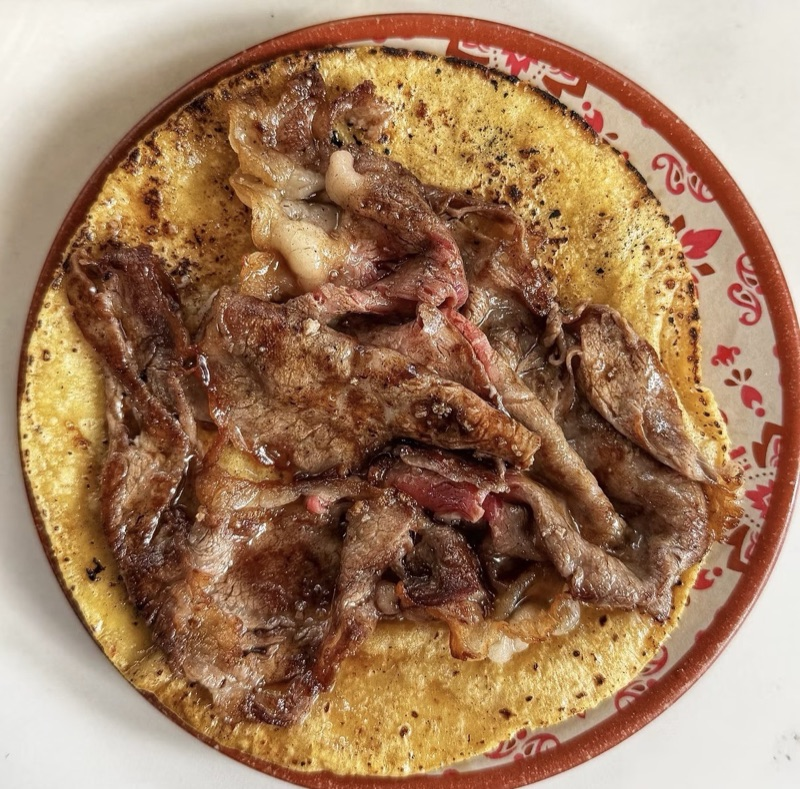

Menu
Gourmet tacos that elevate traditional street-taco formats.

Tacos
- Carne asada Beef
- Arrachera Skirt steak taco
- Picaña (trompo) Top sirloin taco, cooked on the trompo
- A5 Wagyu Hand-pressed tortilla, spicy soy salsa. Signature dish
- Lechón (carnitas) 12-hour cooked suckling pig
- Rib eye Beef
- Bass al pastor
- Vegan options Available
Beyond tacos
- Tostadas Including tuna and ceviche
- Quesadillas
- Noodle soup
- Caesar salad
Salsas
- Salsa cruda Mild
- Martajada Very spicy, made with árbol and morita chiles
Desserts
- Sorbets
- Ice creams
- Meringues